Setting up Dynamical Systems
Contents
A dynamical system object is initialised using
DS = DynamicalSystem(); % In an initial step the order of the dynamical system has to be specified. This can be done via % set(DS,'order',order)
Depending on the dynamical system which is to be analysed, the following procedures have to be followed.
Setting up a Second Order Dynamical System
In this section we explain how DynamicalSystem constructs a dynamical system object in second order form which is given as:
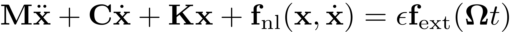 - Second order
The linear system matrices can be set via the set method of the class as
set(DS,'M',M,'C',C,'K',K);
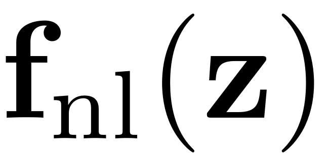 is a nonlinear polynomial function of degree two or higher an can also be set with the set method as.
set(DS,'fnl',fnl);
This nonlinear force may be prepared in one of the following ways:
Using tensor format:
In tensor notation the second order nonlinear internal forces are expanded as
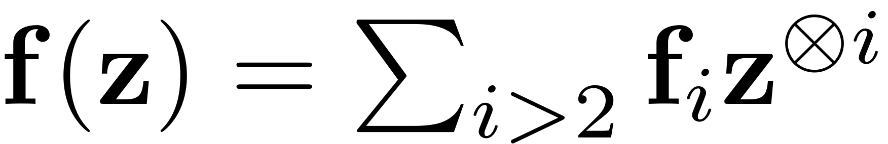
The order i nonlinearity is thus represented by a 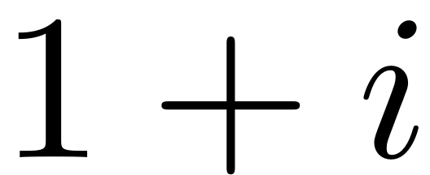 dimensional tensor  . For implementation it is represented by a multidimensional array of dimension . These arrays are stored in a cell array. So in this case one might obtain the order i nonlinearity as
. For implementation it is represented by a multidimensional array of dimension . These arrays are stored in a cell array. So in this case one might obtain the order i nonlinearity as
fi = f{i}
Here 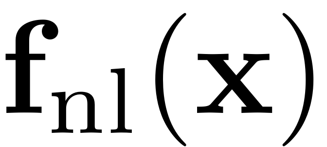 is a polynomial function of degree two or higher, which is stored as a cell array such that  corresponds to polynomials of degree k+1. is given by a tensor of order k+2, where the first mode corresponds to indices for the force vector.
corresponds to polynomials of degree k+1. is given by a tensor of order k+2, where the first mode corresponds to indices for the force vector.
Using multi-index format: In multi-index notation the second order nonlinear internal forces are expanded as
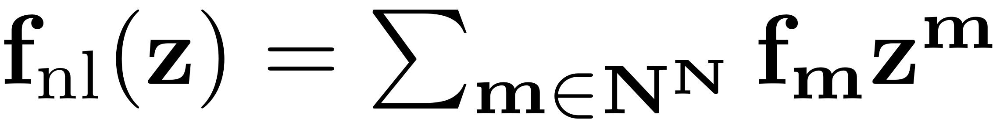
The variate monomials in this expansion are written as 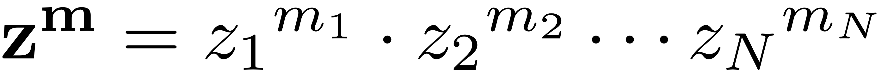. The nonlinearity in this case is stored in a struct array with fields that characterise its coefficients and the corresponding multi-indices. Thus the relevant quantities are stored
fm = f(m_abs).coeffs
fm = f(m_abs).ind
This extracts all coefficients of the Taylor expansion and the corresponding order multi-indices m. So is a 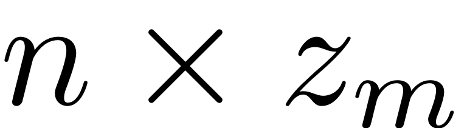 and is a dimensional array, where 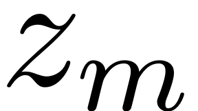 denotes the number of unique multi-indices at order .
In case of velocity-independent internal forces, the tensors and multi-indices are of lower dimensionality respectively, as they only require half the input variables to describe the action of the forces.
Second order external excitation
The external force is provided as a Fourier Expansion in terms of the relevant harmonics.
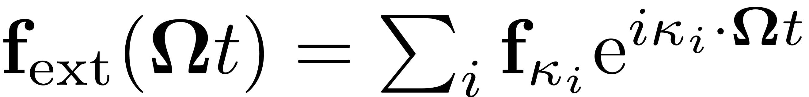
Furthermore the forcing frequency is given by a frequency vector. This force may be input to the dynamical system in various formats:
Format 1: As a struct array
fext.epsilon = epsilon
fext.data = data
where is a struct array with entries
data(i).kappa = kappa_i
data(i).coeffs = f_kappa_i
In this case it is passed to the DS object as
DS.add_forcing(fext)
Format 2: With harmonics and coefficients
If only a single harmonic is used for a periodic excitation, the harmonics 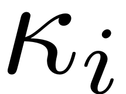 and the coefficients 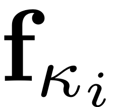 can be input manually as
coeffs = [f_kappa_1, f_kappa_2]
Kappas = [kappa_1, kappa_2]
The second order form is converted into the first order form with
![$$ \mathbf{z}=\left[\begin{array}{c}\mathbf{x}\\\dot{\mathbf{x}}\end{array}\right],
\quad\mathbf{A}=\left[\begin{array}{cc}-\mathbf{K} & \mathbf{0}\\\mathbf{0} & \mathbf{M}\end{array}\right],
\mathbf{B}=\left[\begin{array}{cc}\mathbf{C} & \mathbf{M}\\\mathbf{M} & \mathbf{0}\end{array}\right],
\quad\quad\mathbf{F}(\mathbf{z})=\left[\begin{array}{c}-\mathbf{f}_{\textrm{nl}}(\mathbf{x},\dot{\mathbf{x}})\\\mathbf{0}\end{array}\right],
\quad\mathbf{F}_\textrm{ext}(\mathbf{z},\mathbf{\Omega} t) =\left[\begin{array}{c}\mathbf{f}_{\textrm{ext}}(\mathbf{\Omega} t)\\ \mathbf{0} \end{array}\right] $$](SetupDS_Explanation_eq14245467934836547411-Rescaled.png)
Setting up a First Order Dynamical System
In this section we explain how the class constructs a dynamical system object in first order form which is given as:
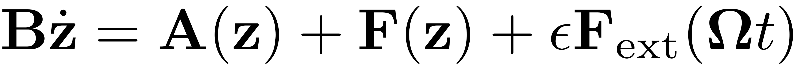 The linear system matrices can be set via the set method of the class as
set(DS,'A',A,'B',B);
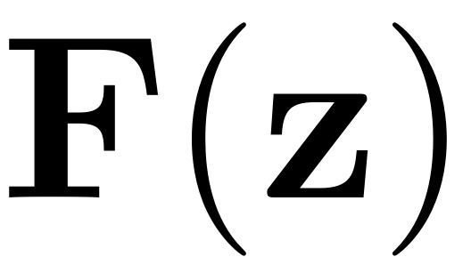 is a nonlinear polynomial function of degree two or higher an can also be set with the set method as.
set(DS,'F',F);
This nonlinear force may be prepared in one of the following ways:
Using tensor format:
In tensor notation the first order nonlinear internal forces are expanded as
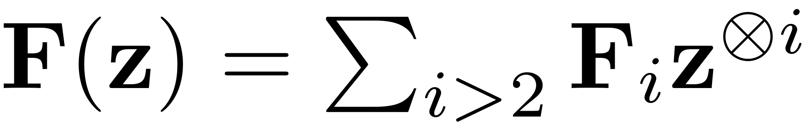
The order i nonlinearity is thus represented by a dimensional tensor 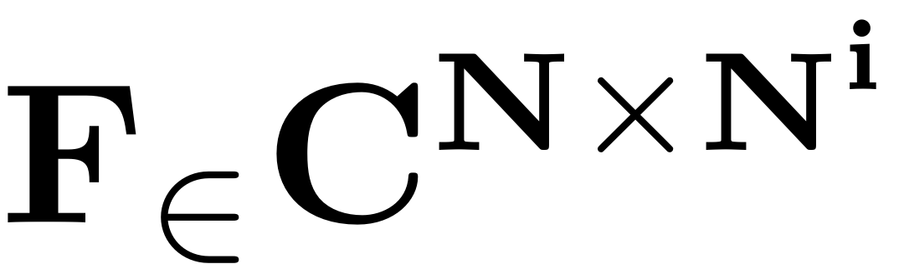. For implementation it is represented by a multidimensional array of dimension . These arrays are stored in a cell array. So in this case one might obtain the order i nonlinearity as
Fi = F{i}
Using multi-index format: In multi-index notation the first order nonlinear internal forces are expanded as
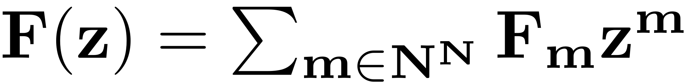
The variate monomials in this expansion are written as . The nonlinearity in this case is stored in a struct array with fields that characterise its coefficients and the corresponding multi-indices. Thus the relevant quantities are stored
Fm = F(m_abs).coeffs
m = F(m_abs).ind
This extracts all coefficients of the Taylor expansion and the corresponding order multi-indices m. So is a 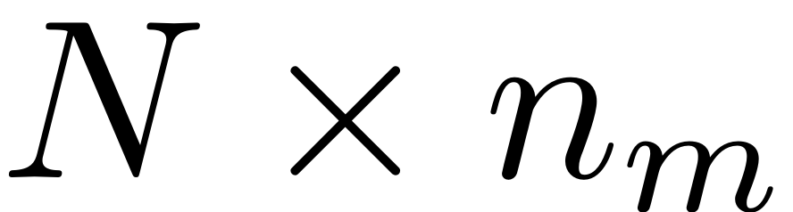 and is a dimensional array, where  denotes the number of unique multi-indices at order .
denotes the number of unique multi-indices at order .
First order external excitation
The external force is provided as a Fourier Expansion in terms of the relevant harmonics.
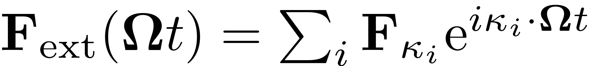
Furthermore the forcing frequency is given by a frequency vector. This force may be input to the dynamical system in various formats:
Format 1: As a struct array
Fext.epsilon = epsilon
Fext.data = data
where is a struct array with entries
data(i).kappa = kappa_i
data(i).coeffs = F_kappa_i
In this case it is passed to the DS object as
DS.add_forcing(Fext)
Format 2: With harmonics and coefficients
If only a single harmonic is used for a periodic excitation, the harmonics and the coefficients  can be input manually as
can be input manually as
coeffs = [F_kappa_1, F_kappa_2]
Kappas = [kappa_1, kappa_2]
In general, the nonlinear and external forces are stored as follows:
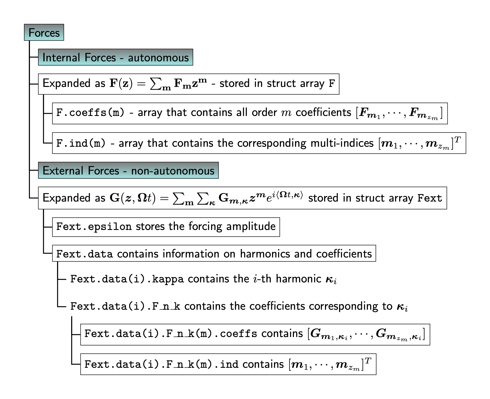
Specifications
Several options can be passed to the dynamical system class, to further specify characteristics of the underlying system, as well as how it is supposed to be handled computationally. In the following they are presented with their default values. If a system with non default parameters is treated, these have to be adapted.
set(DS.Options,'Nmax',6); % Maximal sytem size for which the full spectrum is computed set(DS.Options,'Emax',10); % Maximal number of Eigenvalues and -vectors that are computed if system size is larger than Nmax set(DS.Options,'notation','multiindex');% Notation in which nonlinear forces are to be handled, can be 'multiindex' or 'tensor' set(DS.Options,'RayleighDamping',true); % Whether the underlying damping model is of Rayleigh Type set(DS.Options,'BaseExcitation',false); % Whether the external force arises due to an excitation of the base which leads to a frequency dependent forcing amplitude. set(DS.Options,'DStype','real'); % To determine whether dynamical system possesses any complex valued quantities. set(DS.Options,'outDOF',[]); % For which DOF of the full system the relevant quantities should be explicitly displayed and stored. set(DS.Options,'HarmonicForce',true); % To determine whether time dependence of the external forcing is harmonic or not set(DS.Options,'lambdaThreshold',1e16); % Threshold beyond which stiff eigenmodes will be removed set(DS.Options,'sigma',0); % value around which eigenvalues are computed. Is set to zero by default which corresponds to the 'smallestabs' setting in the built in eigs function. set(DS.Options,'RemoveZeros',true); % Remove eigenvalues with zero real part from the spectrum. Relevant for the computation of center manifolds and in parameter dependent SSMs.
Methods
The first and crucial method which is provided for the DS class is the 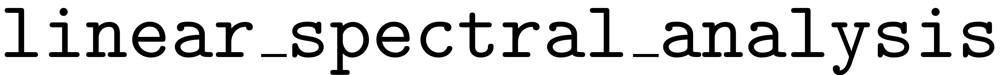 method, which solves specified bits of the eigenvalue problem for the linear truncation of the dynamical system that is input. It is invoked via
[V,D,W] = DS.linear_spectral_analysis();
When run, it outputs the three arguments the left and right eigenvectors and the eigenvalues of the eigenproblems
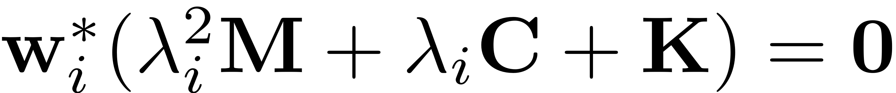
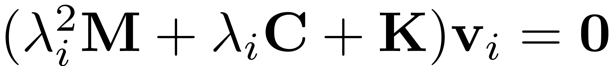
or
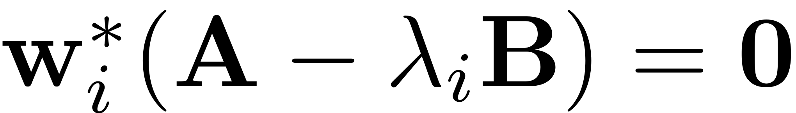
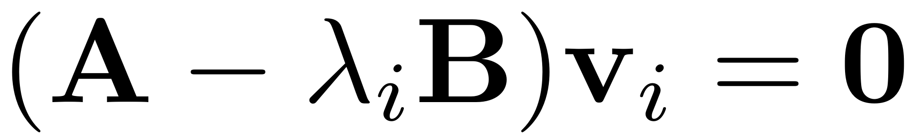
Furthermore it sets up an internal data structure with fields that contain the essential information about the truncated spectrum of the dynamical system which are used for invariant manifold computations.
For the evaluation of the nonlinear internal and the external forces the following functions are provided.
fnl = DS.compute_fnl(x,xd); Fnl = DS.evaluate_Fnl(z); fext = DS.compute_fext(t,x); Fext = DS.evaluate_Fext(t,z);
These are also used for the construction of the governing ODE 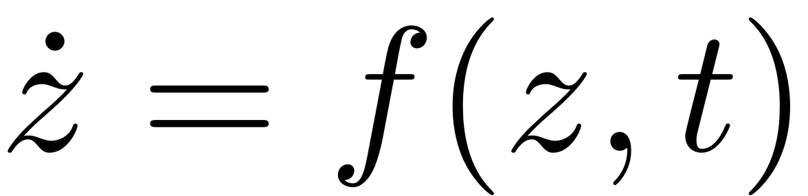 which is evaluated via
f = DS.odefun(t,z);
Further functionalities which are provided for this class include the evaluation of the Jacobians of the nonlinear internal forces via
dfnl = DS.compute_dfnldx(x,xd); dfnl = DS.compute_dfnldxd(x,xd);
and the residual that may be used for the integration of ODEs,
[ r, drdqdd,drdqd,drdq, c0] = DS.residual(q, qd, qdd, t);